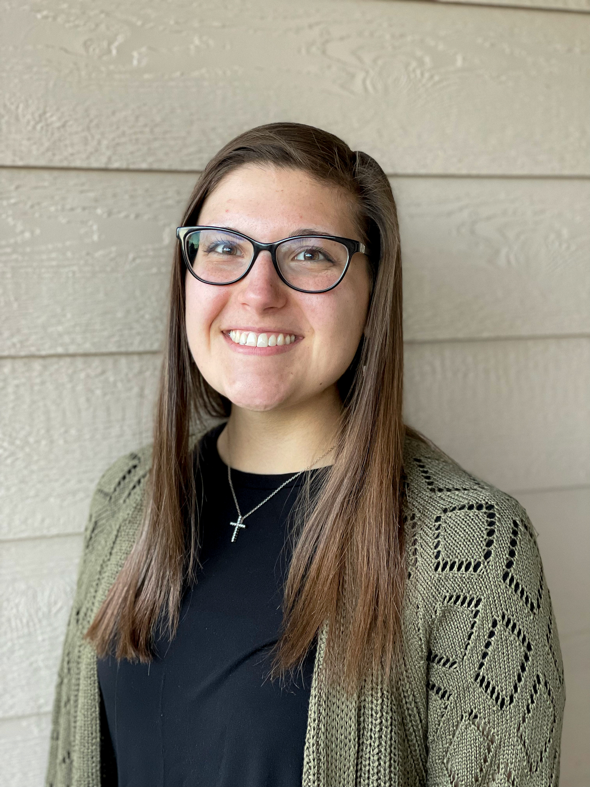

Andreanna Haritopoulos: A Digital Portfolio
Greetings Everyone! My name’s Andreanna and this is a digital sample of work as a strategic communicator. I am a soon-to-be graduate of the Missouri School of Journalism with a minor in Spanish and Multi-Cultural certificate. I have a strong passion for serving communities and the people within them through marketing and digital media communications.
I have previous experience in various customer service and communications capacities, most recently through my role as a Marketing Intern at the Missouri State Fair, where I led graphic design projects, coordinated a Military Flag Retreat event, managed the Fair's Instagram account, and oversaw media relations.
My greatest interest lies in finding a career in which I can connect with individuals and make a positive impact in their lives, whether it be in making a connection through a branded campaign or providing a solution to a problem they may not have thought of before. I am a service-minded individual willing to do all I can to help others and consider myself ready to enter the marketing and public relations workforce to achieve this goal.

Feel Free to Contact Me Any Time!
Email: andharitopoulos@gmail.com
Phone: 815-666-6641